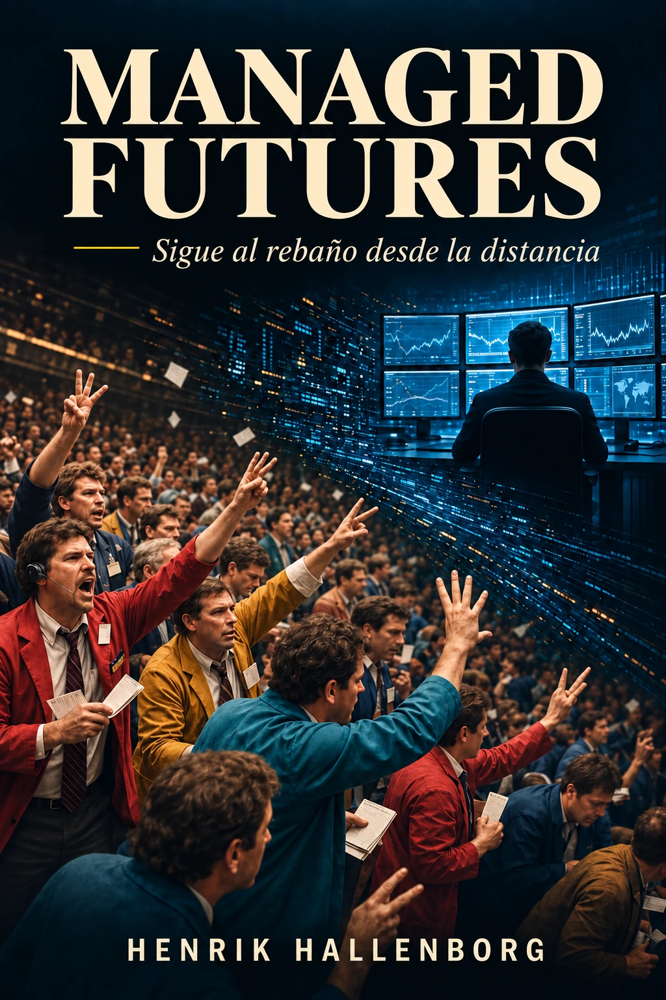

Edición digital
Descarga el libro.
La edición digital se entrega en PDF y puede leerse en un ordenador, una tableta o un teléfono.
- Haz clic en el botón de descarga.
- El PDF se abrirá o se guardará en la carpeta de descargas del navegador.
- Abre el archivo con cualquier lector de PDF.
- Puedes compartir el libro con otras personas interesadas en Managed Futures.